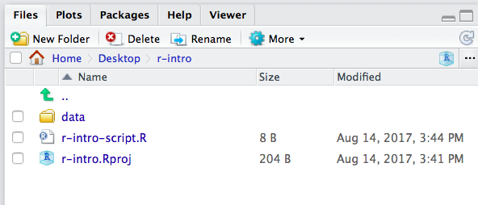
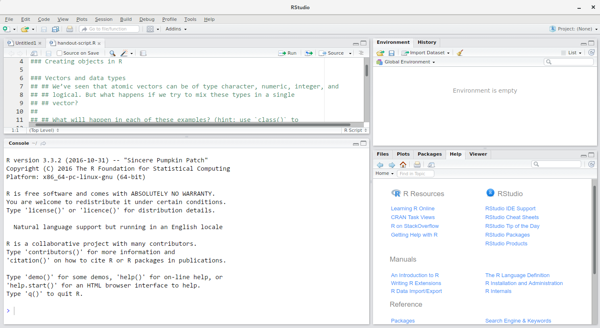
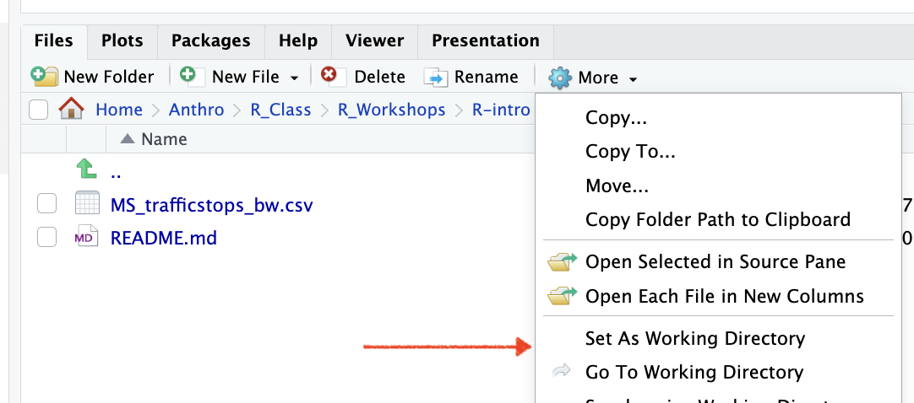

Chapter 1 R and Rstudio
Learning Objectives
- Be familiar with reasons to use R.
- Understand how R relates to RStudio.
- Be able to navigate the RStudio interface including the Script, Console, Environment, Help, Files, and Plots windows.
- Create an R Project in RStudio.
- Set a “working” directory.
- Send commands from the Script window to the Console in RStudio.
- Install additional packages with RStudio and using R commands.
1.1 What is R? What is RStudio?
The term “R” is used to refer to both the programming language to write scripts and the software (“environment”) that interprets the scripts written in R. It is an alternative to statistical packages like SAS, SPSS, or Stata, which lets you perform a wide variety of data analysis, statistics, and visualization.
RStudio is currently a very popular way to not only write your R scripts but also to interact with the R software. To function correctly, RStudio needs R and therefore both need to be installed on your computer.
1.2 Why learn R?
1.2.1 R does not involve lots of pointing and clicking, and that’s a good thing
The learning curve might be steeper than with other software, but with R, the results of your analysis does not rely on remembering a succession of pointing and clicking, but instead on a series of written commands, and that’s a good thing! So, if you want to redo your analysis because you collected more data, you don’t have to remember which button you clicked in which order to obtain your results, you just have to run your script again.
Working with scripts makes the steps you used in your analysis clear, and the code you write can be inspected by someone else who can give you feedback and spot mistakes.
Working with scripts forces you to have a deeper understanding of what you are doing, and facilitates your learning and comprehension of the methods you use.
1.2.2 R code is great for reproducibility
Reproducibility is when someone else (including your future self) can obtain the same results from the same dataset when using the same analysis.
R integrates with other tools to generate manuscripts from your code. If you collect more data, or fix a mistake in your dataset, the figures and the statistical tests in your manuscript are updated automatically.
An increasing number of journals and funding agencies expect analyses to be reproducible, so knowing R will give you an edge with these requirements.
1.2.3 R is multidisciplinary, extensible, and popular
With close to 20,000 packages on CRAN (The Comprehensive R Archive Network) that can be installed to extend its capabilities, R provides a framework that allows you to combine statistical approaches from many scientific disciplines to best suit the analytical framework you need to analyze your data. For instance, R has packages for image analysis, mapping, time series, text mining, and a lot more.
1.2.4 R works on data of all shapes and sizes
The skills you learn with R scale easily with the size of your dataset. Whether your dataset has hundreds or millions of lines, it won’t make much difference to you.
R is designed for data analysis. It comes with special data structures and data types that make handling of missing data and statistical factors convenient.
R can connect to spreadsheets, databases, and many other data formats, on your computer or on the web.
1.2.5 R produces high-quality graphics
The plotting functionalities in R are endless, and allow you to adjust any aspect of your graph to convey most effectively the message from your data.
1.2.6 R has a large user community
Thousands of people use R daily. Many of them are willing to help you through mailing lists and websites such as Stack Overflow.
1.3 The RStudio IDE
If you plan to work with R, RStudio will make your life much easier and greatly enhance your experience working with R.
RStudio,is an Integrated Development Environment (IDE) for working with R. The RStudio IDE open-source product is free under the Affero General Public License (AGPL) v3. The RStudio IDE is also available with a commercial license and priority email support from RStudio, Inc.
One of the advantages of using RStudio is that all the information you need to write code is available in a single window.
We will use RStudio to write code, search for help, navigate the files on our computer, inspect the variables we are going to create, and visualize the plots we will generate. RStudio can also be used for other things (e.g., version control, developing packages, writing Shiny apps) that we will not cover during this workshop.
1.3.1 How to start an R project
It is good practice to keep a set of related data, analyses, and text self-contained in a single folder. When working with R and RStudio you typically want that single top folder to be the folder you are working in. In order to tell R this, you will want to set that folder as your working directory. Whenever you refer to other scripts or data or directories contained within the working directory you can then use relative paths to files that indicate where inside the project a file is located. (That is opposed to absolute paths, which point to where a file is on a specific computer). Having everything contained in a single directory makes it a lot easier to move your project around on your computer and share it with others without worrying about whether or not the underlying scripts will still work.
Whenever you create a project with RStudio it creates a working directory for you and remembers its location (allowing you to quickly navigate to it) and optionally preserves custom settings and open files to make it easier to resume work after a break. Below, we will go through the steps for creating an “R Project” for this workshop.
- Start RStudio
- Under the
Filemenu, click onNew project, chooseNew directory, thenEmpty project - As directory (or folder) name enter
r-introand create project as subdirecory of your desktop folder:~/Desktop - Click on
Create project - Under the
Filestab on the right of the screen, click onNew Folderand create a folder nameddatawithin your newly created working directory (e.g.,~/r-intro/data) - On the main menu go to
Files>New File>R Script(or use the shortcutShift+Cmd+N) to open a new file - Save the empty script as
r-intro-script.Rin yourr-introdirectory.
Your r-intro directory should now look like in Figure 1.1.

Figure 1.1: What it should look like at the beginning of this lesson
1.3.2 Knowing your way around RStudio
RStudio is divided into 4 “Panes”:
- the Source for your scripts and documents (top-left, in the default layout),
- the R Console (bottom-left),
- your Environment/History (top-right), and
- your Files/Plots/Packages/Help/Viewer (bottom-right).
The placement of these panes and their content can be customized (see main Menu, Tools -> Global Options -> Pane Layout).

Figure 1.2: The RStudio Interface
1.3.3 The working directory
You will likely work with files in R, either writing them out or reading them in.
The working directory is an important concept to understand to help with managing file in- and output. It is is a file path on your computer (for example R-intro/data/gapminder.csv) that sets the default location of any files you read into R, or save out of R. If you ask R to import a text file, or save a table, it will assume that the file is inside of your working directory.
Whenever you start R/RStudio it must have a working directory and will automatically determine which it is. The determination is based on how exactly you start R/RStudio (open an RStudio project, open without loading a file, open by clicking on a file, etc.).
You can only have one working directory active at any given time. That active working directory is also called your current working directory.
It is important you know what your current working directory is. When you write code for your project, your scripts must refer to external files always in relation to your working directory otherwise you will get error messages.
To check which working directory R thinks it is in:
To change to a different working directory in R go to the Console and type:
You can also use the RStudio interface to go the current working director to or set a different working directory. Navigate to the Files pane and expand the drop down menu under ‘More’ (Figure 1.3).

Figure 1.3: How to set a working directory in the RStudio interface
Alternatively, you can use the shortcut Ctrl + Shift + H to set a working directory in RStudio.
If you see something like this:
> read_csv("data/sample_data.csv")
Error: 'data/sample_data.csv' does not exist in current working directory
- find out what your working directory is
- find the directory where your file is
- check the file path you provided is correct (are there any typos?)
1.3.4 Organizing your working directory
Using a consistent folder structure across your projects will help keep things organized, and will also make it easy to find/file things in the future. This can be especially helpful when you have multiple projects. In general, you may create directories (folders) for scripts, data, and documents.
data/Use this folder to store your raw data and intermediate datasets you may create for the need of a particular analysis. For the sake of transparency and provenance, you should always keep a copy of your raw data accessible and do as much of your data cleanup and preprocessing programmatically (i.e., with scripts, rather than manually) as possible. Separating raw data from processed data is also a good idea. For example, you could have subfolders in yourdatadirectory nameddata/raw/anddata/processedthat woudl contain the respective raw and processed files. I also like to log my data processing steps in a simple textfile that I keep there as well.documents/If you are wroking on a paper this would be a place to keep outlines, drafts, and other text.scripts/This would be the location to keep your R scripts. Again, depending on the complexity, you may want to add subfolders that contain, for example all the plotting scripts, or all the datas cleaning scripts.
You may want additional directories or subdirectories depending on your project needs, but this is a good template to form the backbone of your working directory.
1.4 Interacting with R
The basis of programming is that we write down instructions for the computer to follow, and then we tell the computer to follow those instructions. We write, or code, instructions in R because it is a common language that both the computer and we can understand. We call the instructions commands and we tell the computer to follow the instructions by executing (also called running) those commands.
There are two main ways of interacting with R: by using the console or by using script files (plain text files that contain your code).
1.4.1 RStudio Console and Command Prompt
The console pane in RStudio is the place where commands written in the R
language can be typed and executed immediately by the computer. It is also where
the results will be shown for commands that have been executed. You can type
commands directly into the console and press Enter to execute those commands, but they will be forgotten when you close the session.
If R is ready to accept commands, the R console by default shows a > prompt. If it
receives a command (by typing, copy-pasting or sent from the script editor using
Ctrl + Enter), R will try to execute it, and when
ready, will show the results and come back with a new > prompt to wait for new
commands.
If R is still waiting for you to enter more data because it isn’t complete yet,
the console will show a + prompt. It means that you haven’t finished entering
a complete command. This is because you have not ‘closed’ a parenthesis or
quotation, i.e. you don’t have the same number of left-parentheses as
right-parentheses, or the same number of opening and closing quotation marks.
When this happens, and you thought you finished typing your command, click
inside the console window and press Esc; this will cancel the incomplete
command and return you to the > prompt.
1.4.2 RStudio Script Editor
Now let’s take a look at r-intro-sript.R that opened up ealier in your script editor.
Perhaps one of the most important aspects of making your code comprehensible for others and your future self is adding comments about why you did something. You can write comments directly in your script, and tell R not no execute those words by putting a hashtag (#) before you start typing the comment.
Because we want to keep our code and workflow, it is very good practice to type the commands we want in the script editor, and save the script. This way, there is a complete record of what we did, and anyone (including our future selves!) can easily replicate the results on their computer.
RStudio makes it easy to comment or uncomment a paragraph: after selecting the lines you want to comment, press at the same time on your keyboard Ctrl + Shift + C. If you only want to comment out one line, you can put the cursor at any location of that line (i.e. no need to select the whole line), then press Ctrl + Shift + C.
Here are a few features of RStudio designed to make your coding easier and less error-prone.
Syntax Coloring: You will notice in the R script editor that your code is colored. You can change these settings in Tools > Global options > Appearance. Depending on your settings function names, values, and reserved words are colored differently. This is meant to enhance readability and help you identify issues with the code.
Keyboard Shortcuts: Another feature of RStudio is that it allows you to execute commands directly from the script editor by using
the Ctrl + Enter shortcut (on Macs, Cmd +
Enter will work, too). The command on the current line in the
script (indicated by the cursor) or all of the commands in the currently
selected text will be sent to the console and executed when you press
Ctrl + Enter. You can find other keyboard shortcuts under Tools > Keyboard Shortcuts Help (or Alt + Shift + K)
At some point in your analysis you may want to check the content of a variable
or the structure of an object, without necessarily keeping a record of it in
your script. You can type these commands and execute them directly in the
console. RStudio provides the Ctrl + 1 and
Ctrl + 2 shortcuts allow you to jump between the
script and the console panes.
Autocompletion: In addition to shortcuts RStudio also provides autocompletion. If you begin typing a command or the name of a variable or (under certain conditions) even filenames you have on your latop and thenb hit the Tab key, it will make suggestions and relieve you from typing. More on code completion in RStudio is here: https://support.rstudio.com/hc/en-us/articles/205273297-Code-Completion
Challenge
- Determine what your current working directory is.
- Where in relationship to your current working directory is the “data” folder you just created for your project?